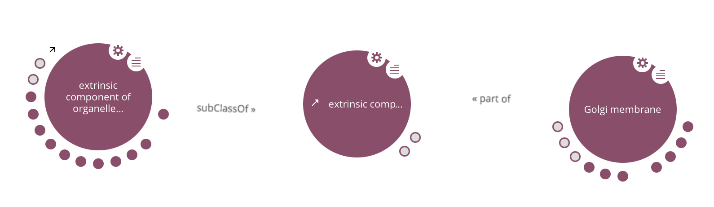
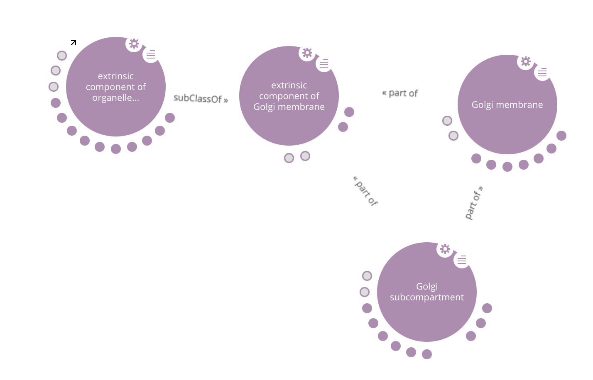
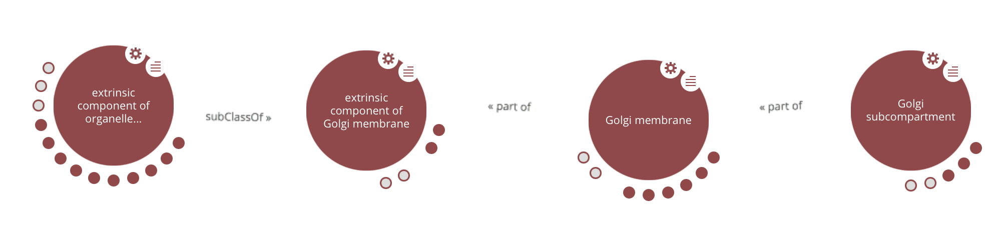
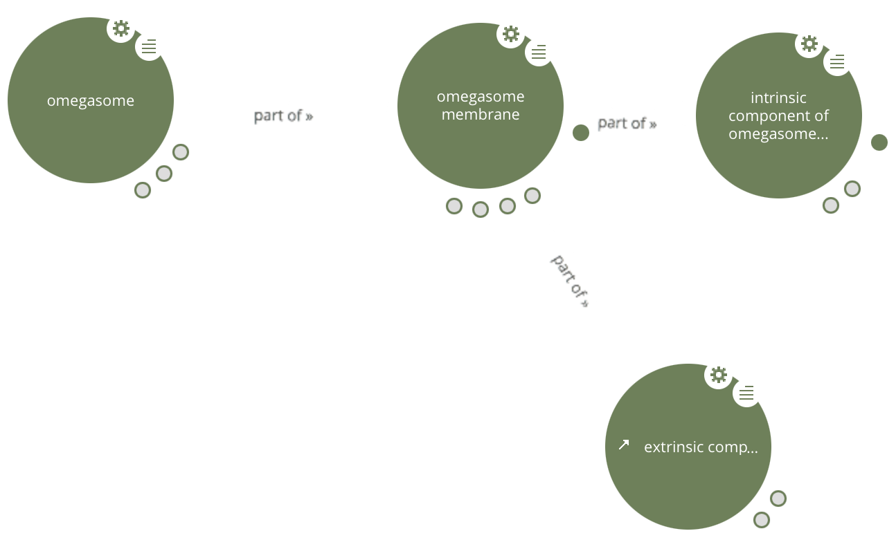
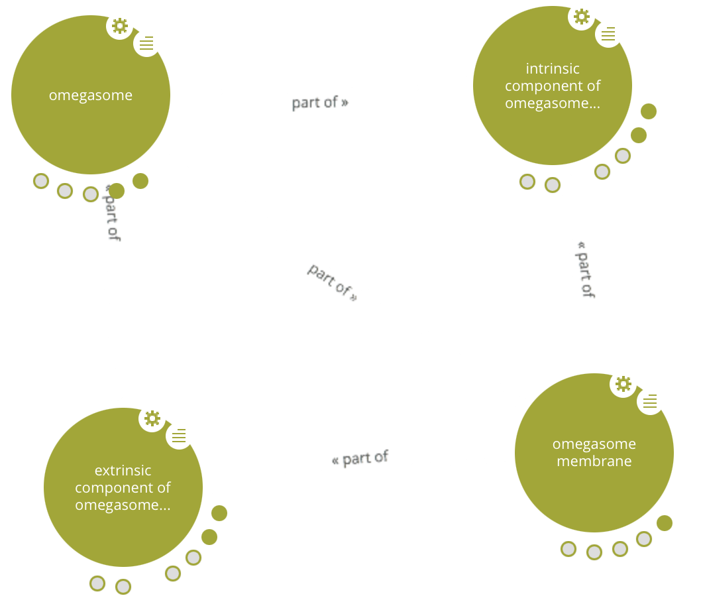
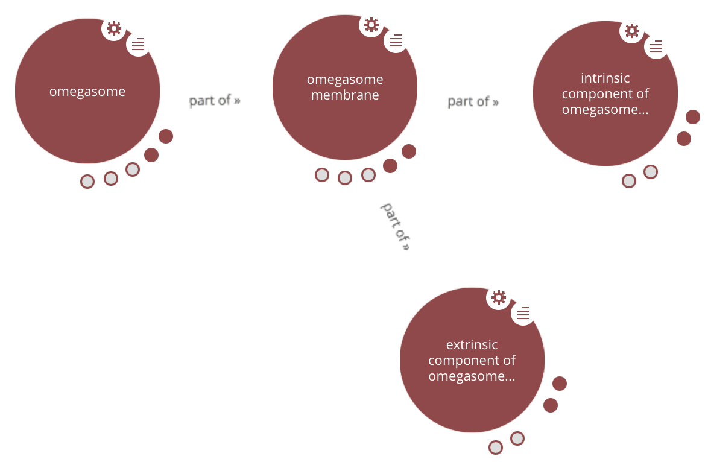
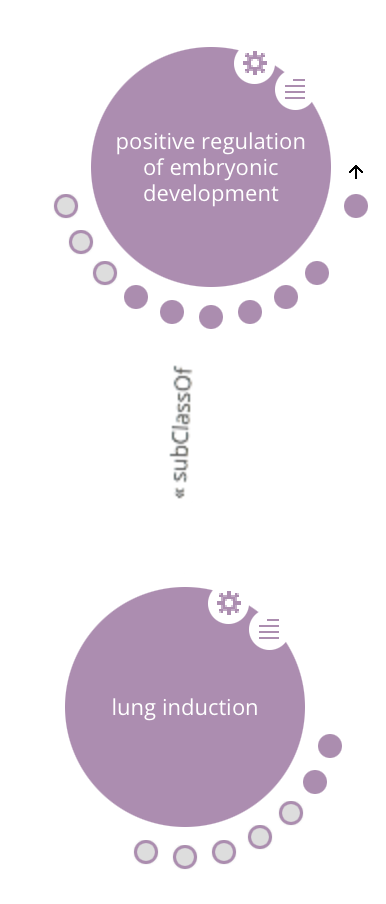
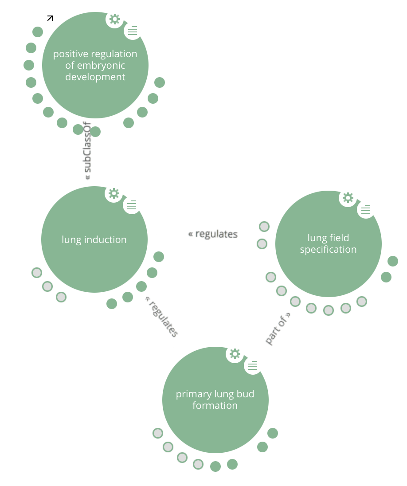
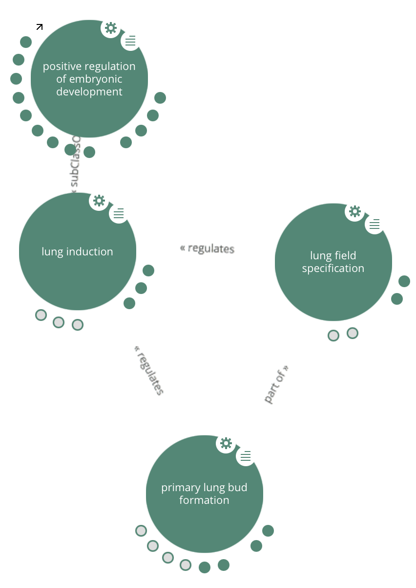

Onto2Graph is a tool based on Java that can generate graphs in different formats from ontologies. The tool is based on OWLAPI library to load the ontologies, and then, it enables to use different reasoners to infer a graph from the ontology (ELK, HERMIT, STRUCTURAL REASONER AND SYNTACTIC REASONER). Once the graph is built, different libraries have been integrated into the tool to transform it into various formats such: RDFXML, GRAPHVIZ, FLATFILE and GRAPHML). The tool implements two different algorithms to carry through with the conversion: A) without the transitive reduction in which relations inferred from transitive object properties will be taken into account. B) with transitive reduction where relations inferred from transitive object properties will not be considered.
To see more information go to GitHub repository. Onto2Graph's GitHub repository
The Onto2Graph visualiser
This web tool is based on the LodLive project [1]. We modified this project to visualize the difference between ontologies generated by the different proposed algorithms. To do so, firstly we downloaded all ontologies from AberOWL ontology repository [2] including Gene Ontology (GO) and Gene Ontology Plus (GO Plus). Then, we utilized Onto2Graph to transform these ontologies into RDF Graphs which were located in an RDF repository. Finally, we developed this web tool to enable users to visualise the structural changes in the ontologies.
Diego Valerio Camarda, Silvia Mazzini, and Alessandro Antonuccio. Lodlive, exploring the web of data. In Proceedings of the 8th International Conference on Semantic Systems, pages 197-200. ACM, 2012.
Robert Hoehndorf, Luke Slater, Paul N Schofield, and Georgios V Gkoutos. Aber-owl: a framework for ontology-based data access in biology. BMC bioinformatics, 16(1):1, 2015.
The demo
The web page has four different columns, one per each algorithm that we have used to transform the ontologies into graphs. Thus, we have i) Elk Reasoner 1st Algorithm (t=false) ii) Elk Reasoner 2st Algorithm(t=true) iii) Syntactic Analyzer 1st Algorithm (t=false) and Syntactic Analyzer 1st Algorithm (t=true). Each contains hundreds of ontologies that have been transformed. However, in order to be more accurate, we have added three different examples at the top of each list that shows explicit structural difference between ontologies.
The first example, the one which has been used in the paper ("example - * example1"). In this example, we take the Gene Ontology Plus (GOPlus)

Figure 1.1 - Graph generated by using Syntactic Analyzer.

Figure 1.2 - Graph generated by using Elk reasoner (t=false) without transitive reduction. .

Figure 1.3 - Graph generated by using Elk reasoner (t=true) with transitive reduction.
Unlike the example that we have put in the paper. The Figure 1.1 does not represent the relation "Bounding_Layer_Of" because, we only include in the graph SubClassOf, PartOf and Regulates relationships. That is why this graph does not represent the "Golgi Subcompartment" concept. In Figure 1.2 we can see the "Golgi Subcompartment" is linked twice by "Golgi membrane" and "Extrinsic component of Golgi Membrane". The second link has been inferred from the part-of relationship expressed in the first link. Finally, in Figure 1.3 we can see how transitive reduction is applied removing one of the links.
The second example ("example - * example2"). In this example we will identify two relevant aspects: i) transtive reduction and ii) inference

Figure 2.1 - Graph generated by using Syntactic Analyzer.

Figure 2.2 - Graph generated by using Elk reasoner (t=false) without transitive reduction. .

Figure 2.3 - Graph generated by using Elk reasoner (t=true) with transitive reduction.
In this example, we can see how the transitivity reduction is applied to the graphs represented in Figure 2.2 and Figure 2.3 several times. The "omegasome" is a PartOf "omegasome membrane" and "omegasome membrane" is at the same time PartOf "intrinsic component of omegasome membrane". Thus, we inferred that omegasome is a part of "component of omegasome membrane". In the Figure 2.3 and Figure 2.1 we can see how these relations have disappeared because of the transitivity reduction and the syntactic representation which is not able to infer those relations. On the other hand, while "extrinsic concept of omegasome membrane" in Figure 2.1 only has two children "cytoplasmic part" and "extrinsic component of organelle membrane" which have been directly obtained from the asserted axioms. However Figure 2.2 and Figure 2.3 we can see more children which means that inferred axioms have been added too.
The third example ("example - * example3"). In this example we are going to analyse the particular case of regulates and part of relations.

Figure 3.1 - Graph generated by using Syntactic Analyzer.

Figure 3.2 - Graph generated by using Elk reasoner (t=false) without transitive reduction. .

Figure 3.3 - Graph generated by using Elk reasoner (t=true) with transitive reduction.
In Figure 3.1 the regulates relation is not shown due to we have only considered subclassOf, regulates and partOf relations. However, as we can see in Figure 3.2 and Figure 3.3, "lung induction" regulates "lung field specification". This relation has been inferred from the axiom "lung induction" subclassOf (positively regulates some lung field specification).
ol>